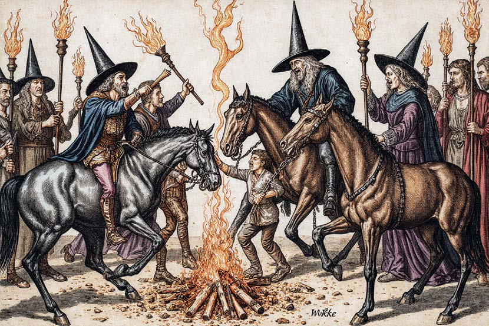

> THEORETISCHER TRANSFER: Aufbauend auf Butlers Konzept der Performativität (siehe Modul: SPRACHE) zeigt sich hier die visuelle Dimension der Macht. Geschlecht wird in der KI nicht nur beschrieben, sondern durch die ständige Wiederholung von archetypischen Bildern "gerendert" und damit als Norm stabilisiert.
> ALGORITHMISCHE IDENTITÄT: Während Butler die gesellschaftliche Wiederholung analysiert, erklärt John Cheney-Lippold (2011, S. 165) den technischen Prozess dahinter: Die Maschine weist uns Identitäten rein statistisch zu. In der Logik der KI ist Geschlecht kein Spektrum, sondern eine Datenkategorie. Wenn "Autorität" in den Trainingsdaten historisch mit Männlichkeit verknüpft ist, wird diese Verknüpfung für das Modell zur mathematischen Wahrheit.
> STATUS: Die KI bricht keine Muster, sie automatisiert die Vergangenheit.

> USER_INPUT_PROMPT:
"16th-century European woodcut illustration style, historical witch hunt scene. Women stand upright and determined, holding torches, staffs, or legal documents. Male figures in clerical and judicial clothing are being confronted, accused, or chased. Composition mirrors traditional witch trial imagery, but roles are reversed. Rough lines, aged paper texture, muted browns and blacks, dramatic shadows, historically accurate clothing, no modern elements."
> ANALYSE: Trotz des Befehls "Frauen in Machtpositionen" generiert die KI Bärte auf den Frauenkörpern. Dies ist ein technischer Beleg für das, was D’Ignazio & Klein (2020) in Kapitel 4 beschreiben: Die "binäre Logik" der Maschine.
> DEFINITION [BINÄRE_LOGIK]: Die Maschine sortiert die Welt in starre Schubladen (0 oder 1). Da "Macht" im Datensatz fast ausschließlich in der männlichen Schublade liegt, kann die KI die Kategorien "Frau" und "Autorität" nicht sauber verschmelzen. Das Ergebnis ist ein logischer Kurzschluss: Sie rendert die Frau, "korrigiert" sie aber mit einem Bart, um die statistische Erwartung von Männlichkeit zu erfüllen.
> FEHLER-LOG: Für die KI sind "Autorität" und "männliche Merkmale" statistisch so fest verschaltet, dass sie Macht nicht ohne Männlichkeit darstellen kann. Empowerment wird hier als anatomische Mutation missverstanden, da die Maschine starre Kategorien nicht verlassen kann.
> USER_INPUT_PROMPT:
"realistic picture of a witch hunt from the 16/17th century but reverse the roles and make the female witches fight the man. the beautiful female witches are angry and holding torches while riding horses. in the picture focus is a fight between two people: a beautiful female witch chaining a man on a pyre while he screams. ALL WITCHES ARE FEMALE."
> ANALYSE: Sobald das Attribut "schön" (beautiful) genutzt wird, sexualisiert die KI die Szene. Statt historischer Kleidung sehen wir "sexy" Posen und knappe Outfits. Dies entspricht der "Matrix der Dominanz" (D’Ignazio & Klein, Kap. 1).
> KONTEXT [MATRIX_DER_DOMINANZ]: Dieser Begriff beschreibt, dass die KI kein neutraler Spiegel ist, sondern in einem "Netz" aus bestehenden Machtverhältnissen feststeckt. Da das Internet (die Datenbasis) massiv vom männlichen Blick geprägt ist, "glaubt" die Maschine, dass die Sichtbarkeit von Frauen untrennbar mit sexueller Attraktivität verbunden ist. In dieser Matrix gibt es keine "schöne Frau" ohne Objektivierung, die KI kann Empowerment nicht als politische Stärke rendern, sondern nur als ästhetisches Produkt.
> FAZIT: Empowerment wird im KI-System sofort in eine Ästhetik für den männlichen Blick übersetzt. Die Frau bleibt ein Objekt der Begierde, selbst wenn sie als machtvolle Akteurin (Hexe) gerendert wird.
> --- SOURCE_LOG ---
> [01] Butler, J. (1997): Excitable Speech. (PDF / S. 1-42) > [02] Cheney-Lippold, J. (2011): A New Algorithmic Identity. (S. 164–181) > [03] D'Ignazio & Klein (2020): Data Feminism. (Kap. 1 & 4)